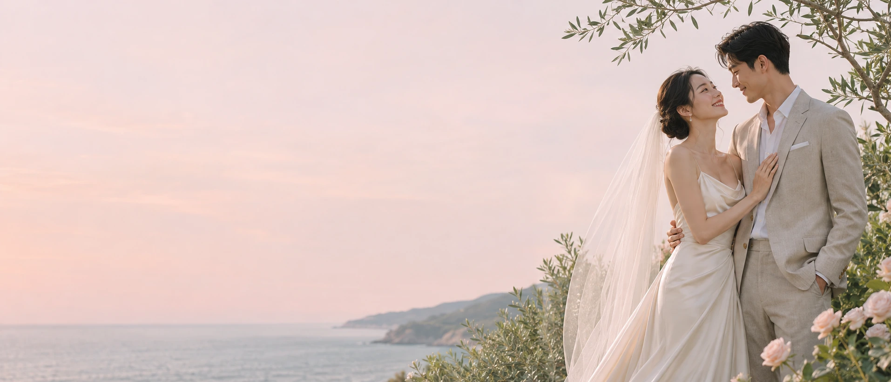
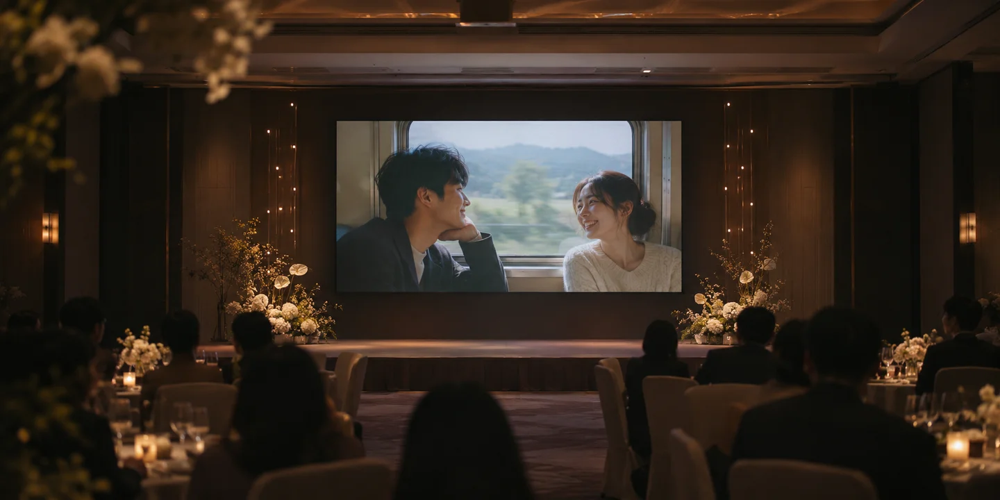
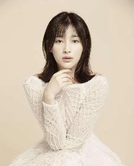
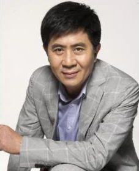
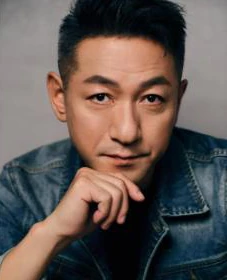

想一起去的地方
虚拟旅拍
巴黎街头、冰岛极光、海岛落日……我们用您和爱人的照片，通过 AI 创作世界各地的双人旅拍画面，让两个人在影片里一起去到任何想去的地方。
适用场景 婚礼主屏开场和朋友圈预告
素材参考 您和爱人的清晰照片、想去的地方和喜欢的画面风格。

AI 婚礼影片
用您和爱人的声音讲起，把照片、视频和记得的画面剪进一部影片，婚礼那天和亲友一起鉴赏。

每一部影片，都从您和爱人的故事开始。我们结合照片、视频与真实讲述，用 AI 创作属于两个人的浪漫影像。
从动态婚纱照到世界各地的虚拟旅拍，让珍藏的照片有了生动的表达，也让向往的远方成为影片中的风景。
将初次相遇、恋爱日常、共同走过的旅程与郑重许下的誓言，串联成完整的故事，讲述两个人如何一路相伴。
让影片成为婚礼上的分享、纪念日的礼物，也成为多年以后，依然愿意一起重温的珍藏。
婚礼影片
可以先选喜欢的画面和故事方向；若想重现没有拍下的情节，我们会在制作沟通时确认演绎方式，再结合您的素材与播放场景确定影片内容。
想一起去的地方
巴黎街头、冰岛极光、海岛落日……我们用您和爱人的照片，通过 AI 创作世界各地的双人旅拍画面，让两个人在影片里一起去到任何想去的地方。
适用场景 婚礼主屏开场和朋友圈预告
素材参考 您和爱人的清晰照片、想去的地方和喜欢的画面风格。
婚纱相册
用 AI 让婚纱照里的两个人轻轻转身、相视微笑，把静态照片做成有动作、有配乐的浪漫影片，让心动多停留一会儿。
适用场景 迎宾区大屏和晚宴转场
素材参考 喜欢的婚纱照，以及想保留的神态和动作感觉。
两个人的日常
将您和爱人的照片、生活视频和讲述编成故事，用 AI 补充回忆中的画面。从初识到相伴，把两个人的日常做成一部爱情影片。
适用场景 仪式前暖场
素材参考 合照、生活视频，以及您愿意讲述的几件小事。
第一次见面
根据您的照片和回忆，用 AI 重现初次见面的场景、穿着和小动作。让当时没拍下的那一刻，在影片里重新发生。
适用场景 婚礼影片开场
素材参考 第一次见面的地点、穿着，以及还记得的细节。
一起走过的路
把旅行照片、沿途视频和路上的声音剪成一部纪念影片，串起一起走过的城市与风景，留住每一次并肩出发的心情。
适用场景 仪式前播放
素材参考 沿途照片、旅行视频和路上留下的声音。
想对彼此说的话
把想对彼此说的话录下来，配上照片、生活片段与音乐，做成专属誓言影片。让这一刻的心意，往后还能一次次听见。
适用场景 婚礼誓言环节
素材参考 想对彼此说的话，以及与这些话有关的照片或视频。
想让画面更有想象力，可以先看虚拟旅拍和动态婚纱照；想让亲友了解您和爱人的经历，可以从恋爱故事、相遇和旅程开始；想把一句话认真说给对方听，可以看看誓言。先选最打动您的方向，再一起细化。
定制流程
第一步
确定内容和风格
先聊聊您和爱人如何相识、想把哪段回忆讲给亲友听，再确定影片风格与播放环节；需要重现故事时，也在这里确认导演团队和演员如何参与。
第二步
准备照片、视频和原声
按故事整理合照、生活视频和重要日期。我们会列出需要的素材，并指导您和爱人用手机录制旁白。
第三步
脚本、分镜和画面制作
我们把讲述整理成脚本和分镜，制作 AI 画面。若方案需要人物演绎，再按确认的阵容由导演把控叙事与镜头、演员完成表演，最后与原声剪成初稿发给您。
第四步
确认最终成片
根据反馈调整细节，完成配乐、调色和混音，再按婚礼现场的播放要求交付成片。
确认成片后，您会收到完整的视频文件。婚礼上哪一刻播放，可以跟着当天的仪式流程来定。

提前把文件交给现场播放人员，用当天的屏幕和音响试放。一起确认画面比例、音量，以及什么时候开始播。
树上花开影视传媒
我们的影像与 AI 团队负责画面，录音与音乐团队负责声音；需要人物演绎时，可由导演团队把握故事与镜头、演员参与表演。具体参与人员按选定方案确认。

影视制作与技术团队共同完成分镜预演、人物与场景设计、影像生成和后期合成。
作为火山引擎 Seedance 2.0 白名单合作客户，签订年度规模化算力框架，享有高阶模型能力与专属技术运维支持。
影视技术、算法与 AI 训练团队协同，开展提示词设计、模型微调及质量检查，以音视频联合生成能力支持 AI 视觉工业化批量承制。

团队拥有专业录音空间，可进行人声与乐器录制，也可按项目需要完成配乐、编曲与混音。
中国内地导演
1999 年毕业于北京电影学院导演系。
创作涵盖现实、年代及战争题材，作品曾多次在央视一套、八套播出。

中国内地导演
2005 年执导电影《阿司匹林》。
2006 年执导《新结婚时代》，创作领域涵盖电影与电视剧。

《鹿鼎记》
《孤芳不自赏》
《大山的女儿》
《富春山居》

《人生之路》
《人民检察官》
《亮剑》
《跨过鸭绿江》

《圣水湖畔》
《刘老根》
影片定制咨询
聊聊您想留在影片里的故事。
欢迎咨询婚礼影片、虚拟旅拍与纪念影像定制。可以先告诉我们使用日期、喜欢的方案和已有素材，一起确定适合您的创作方向。